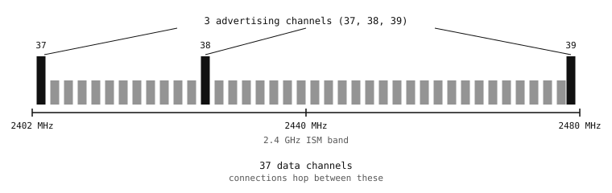

11.3. La radio et la couche de liaison¶
Les deux couches inférieures de la pile BLE sont presque entièrement automatiques du point de vue de Python – le silicium radio et les couches que MicroPython exécute au-dessus de lui gèrent tout, du choix d’un canal à la retransmission d’un paquet perdu. Trois des choix qu’ils font transparaissent malgré tout dans l’API exposée à l’utilisateur : la puissance, la portée et le débit.
11.3.1. La radio¶
Le BLE utilise la même bande ISM (Industrielle-Scientifique-Médicale) à 2,4 GHz que le Wi-Fi, les fours à micro-ondes et la plupart des autres technologies sans fil à courte portée. La bande est divisée en 40 canaux de 2 MHz de large.
Trois des 40 canaux sont réservés aux annonces – de courtes diffusions qui signalent la présence d’un appareil à quiconque est à l’écoute. Ils sont répartis sur l’ensemble de la bande afin qu’un récepteur puisse balayer les trois rapidement et qu’une interférence sur l’un d’eux soit peu susceptible de couper entièrement l’appareil des ondes.
Trente-sept sont des canaux de données. Une fois que deux appareils se connectent, ils échangent des paquets sur ceux-ci, sautant entre eux selon une séquence pseudo-aléatoire convenue par les deux côtés au moment de la connexion. Le saut de fréquence adaptatif permet à l’un ou l’autre côté de marquer un canal comme mauvais (forte interférence Wi-Fi, micro-ondes, réseau BLE voisin) afin que la séquence l’ignore.

Les 40 canaux BLE sur la bande 2,4 GHz. Trois servent aux annonces, le reste transporte le trafic sur une connexion ouverte.¶
La radio transmet de brefs paquets – d’une durée maximale de quelques millisecondes – et dort entre-temps. C’est ce sommeil qui rend la technologie à faible consommation. Un peripheral BLE typique passe bien moins d’un pour cent de son temps à réellement transmettre ; le reste correspond à la radio éteinte entre les événements planifiés.
11.3.2. La couche de liaison¶
La couche de liaison est la plus petite unité du BLE qui dialogue avec son homologue sur un autre appareil. Elle assume quatre tâches.
Découpage en paquets. Chaque paquet porte un court en-tête (adresse d’accès au canal, longueur du paquet, bits de contrôle), une charge utile et un CRC. Le récepteur vérifie le CRC et rejette tout élément corrompu.
Adressage. Chaque appareil BLE possède une adresse d’appareil de 48 bits qui l’identifie sur la radio. Certaines sont publiques – un identifiant matériel attribué par le fabricant, traçable à jamais. Certaines sont aléatoires – générées sur l’appareil, renouvelées périodiquement et éventuellement chiffrées afin qu’un écouteur indiscret ne puisse pas relier deux transmissions au même matériel physique. Les adresses reviennent dans Diffusion et balayage.
Ordonnancement des connexions. Une fois que deux appareils se connectent, la couche de liaison planifie des événements radio périodiques sur la séquence de saut – espacés d’un intervalle de connexion fixe – et regroupe dans chacun les données en attente provenant de la couche GATT au-dessus. Les deux côtés se rendorment entre les événements. L’intervalle de connexion est un paramètre que l’application peut demander (voir Connexions).
Fiabilité. Chaque paquet sur une connexion est acquitté par l’autre côté. La couche de liaison retransmet tout ce qui n’a pas reçu de réponse, de sorte que les couches supérieures voient un flux d’octets ordonné et sans perte. Contrairement à UDP – envoyer un paquet et espérer pour le mieux du côté réseau, le BLE ne dispose pas d’un mode non fiable distinct en usage normal – chaque paquet sur une connexion ouverte est réessayé jusqu’à ce qu’il arrive ou que le lien soit déclaré perdu.
La couche de liaison est aussi l’endroit où s’exécute le chiffrement, une fois qu’une paire d’appareils a convenu d’une clé lors de l’appariement (voir Appairage et liaison (bonding)). Chaque paquet sur un lien chiffré est déchiffré au niveau du récepteur avant que les couches supérieures ne le voient.
11.3.4. Ce que Python perçoit de tout cela¶
Presque rien. Les API bluetooth et aioble n’exposent pas les canaux, les séquences de saut, les CRC des paquets ni les minuteurs de retransmission ; tout cela est géré à l’intérieur du port BLE et de la radio. Les éléments qui transparaissent sont ceux que la négociation au moment de la connexion expose – intervalle de connexion, MTU, type d’adresse.